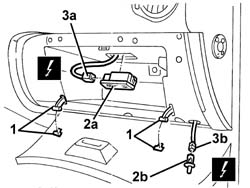
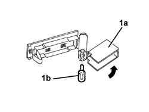

7040G22 FACIA COMPARTMENT LIGHT SWITCH/BULB HOLDER - R+R
- Path
- Procedures > 70 FITTINGS > 7040 BODYSHELL INTERIOR TRIMS AND FITTINGS > 7040G VEHICLE COMPARTMENT LIGHTENING SYSTEM > 7040G22 FACIA COMPARTMENT LIGHT SWITCH/BULB HOLDER - R+R
- Kind
- repair procedure (removal / refitting; the operation number is the code)
- Applies to
- all engines; all production periods
- Interactive page
- https://sloeber94.github.io/elrnDB-aGt/en/#/125001877
Applies to: all engines; all production periods
 Removing
Removing
 Refitting
Refitting1. Open the glove compartment and disconnect the end of travel retainers.
2. Remove the bulb holder (2a) and switch (2b).
3. Disconnect the electrical connections (3a, 3b).
Name | Connector | |
|---|---|---|
3a | Glove compartment light | See G30 GLOVE COMPARTMENT LIGHT ( FACIA ) |
Name | Connector | |
|---|---|---|
3 | Glove compartment light | See I15 GLOVE COMPARTMENT LIGHT |

Applies to: all engines; all production periods
1. if necessary, rotate the bulb cover (1a) and withdraw the bulb from the bulb holder (press fit).

Applies to: all engines; all production periods
Refitting
RemovingCheck that the parts of the bulb holder / switch are not damaged and that the bulb is working properly.
If removed, insert the bulb in the bulb holder and close the cover.
Connect the electrical connection.
Fit the bulb holder and switch.
Check that the bulb holder / switch are working properly.
Connect the glove compartment end of travel retainers and close the compartment.